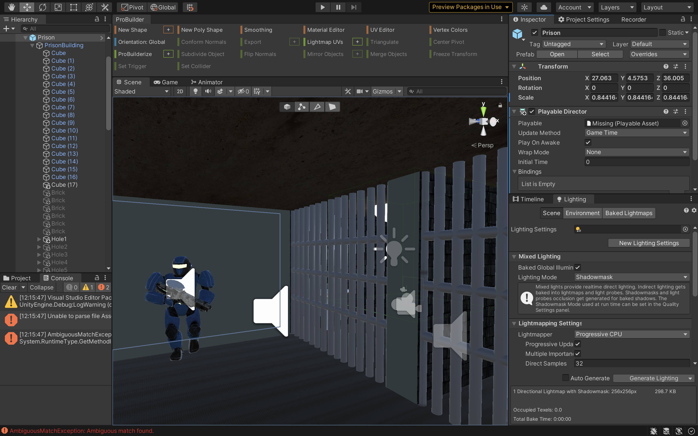
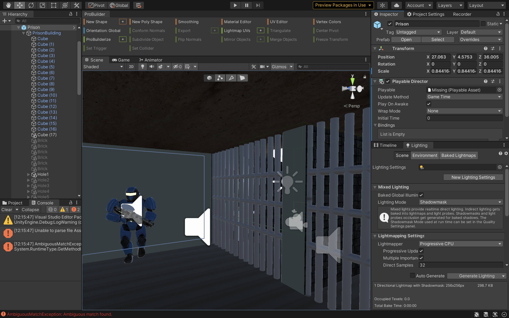
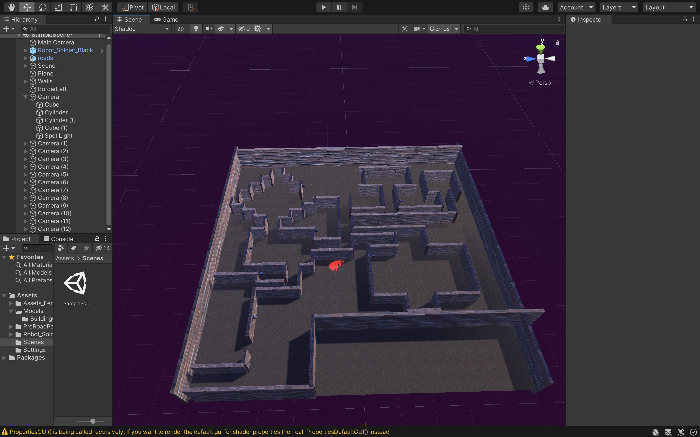

About
Deborah Agboola
Projects
Cyborg Escape
VR, Unity, C#
Alternate Realities @ NYUAD
A virtual-reality experience set in a post-apocalyptic world ruled by tryannical robots, where you, Simon Smith, have to escape prison and save the world!
Project Overview
This is an immersive virtual reality experience created in Alternate Realities, a class taught by Professor Michael Allison. For this project, I created an immersive narrative set in a post-apocalyptic future where the world has been taken over by evil, totalitarian cyborgs. Throughout the experience, the player must complete a set of tasks that will help restore power back to the human race.
Story Breakdown
You have been locked in prison due to treasonous crimes against the government. Set hundreds of years into the future, the world has been taken over by cyborgs who now rule over humanity. Humans are at the bottom of the hierarchy, forced to do nothing but stay in their homes and follow the rules of the government. You were the leader of the rebel group, Sapiens, who were leading a coup against the government to drive the cyborgs out of society and restore power back to your fellow humans. Your plan was mysteriously revealed to the government, which has now landed you in prison, for life! You have not lost all hope though. You are determined to escape prison and continue your rebellion against the cyborgs, and end their dictatorship once and for all!
Beginning
The user begins the experience in a lobby, which is the headquarters of the main character’s anti-cyborg rebel group, called the Sapiens. They must make their way towards the exit, where they will have their hand scanned and then enter the second scene - a prison. In this scene, they will be locked in a cell and must find a way to escape. Spoiler - there’s a pipe that can be used to create a hole in one of the walls!
 

Middle
After the user successfully creates a hole in the wall, they will enter a tunnel which will take them to the third scene, which is set in a city near the cyborg headquarters. The user must navigate through the city, which is constructed like a maze, in order to find the headquarters which is behind an electric fence. Once they disconnect the fence from power, they can enter the headquarters.


Ending
Once in the headquarters, the player must press the ‘kill button’ which will destroy all the cyborgs. The user can also pick up a green tool that they can use to destroy the servers in the console room. Once this is done, they will transition to the last scene during which a news video will be played to report the success of the revolution.
Interactions
There are four types of interactions in this virtual reality experience, and they are as follows:
1) Direct interactions: for picking objects up and colliding objects with other objects
2) Ray interactions: for teleportation and for sending raycasts that will detect the player
3) Socket interaction: for a plug in the city scene
4) Button interaction: for the ‘kill button’ in the console room scene
All these different interactions tie the story together and make the experience much more interactive and immersive than it would have been if the user was just being told the story. It was important for me to include various types of interactions so that the experience would not feel repetitive.
Sounds
A number of different sounds were used throughout this experience, including the following:
1) Mystery/ sci-fi background music that will be persistent throughout all scenes
2) Inner monologue of main character
3) Speech for the robots
4) Dialogue between main character (Simon Smith) and another character (Janet)
5) Sound effects: bricks falling, server breaking, electricity, static noise etc.
6) Game over sound that plays whenever player is detected by player/ cyborg
The dialogue was a very useful tool to help drive the narrative, and to also guide the users through the different tasks that they had to complete. For example, after a certain amount of time, if the user hadn’t found the pipe in the toilet, the player would say something like “hmm, maybe I should take a look inside the toilet and see if I can find something”. This way, more agency was given to the user than they would have gotten if there were instructions telling them what to do.
The background music also helped to set the scene, and because it was persistent throughout all the scenes, it tied the whole story together and maintained continuity. Apart from the background music and the monologue/ dialogue, sound effects were also an integral part of making the story more immersive. In a way, they reinforce the player’s actions by reminding them that their interactions have an effect on the storyworld. For example, the bricks falling sounds made the action seem more realistic.
Animations
Several animations were used to drive the narrative. From the character animations to animations of game objects within the scene such as the XR rig and so on, animations were an essential part of the overall storytelling. Here is a list of all the animations throughout this experience:
- In the prison scene, the XR rig is animated to move and rotate the player towards their prison cell
- In the prison scene, the XR rig is animated to move and rotate the player towards their prison cell
After a hole is created in the wall, the XR rig is once again animated to move through the tunnel (though I ended up changing this from an animation to a script in order to make things run and look smoother)
In the city scene, the cameras + spotlights are animated to rotate, to give the illusion that they are surveilling the area
The cyborgs are animated to walk around the scenes with their rifle, and turn when necessary
Development
Building the Storyworld
The first step during this project was to create and download the assets. Since one of the requirements for this project was to keep the assets folder below 1.5GB, a lot of the assets were created within Unity - and also Maya - using probuilder and other tools. The first scene created was the prison scene, which was made with cubes for the walls, ceiling and floor, and cylinders for the prison cells. The city scene and console room scene were also built from scratch. Assets to help build the scenes were also downloaded from the Unity asset store, such as a toilet, sink, bed and so on.
Using Timeline
Unity’s timeline tool was a very useful part of this project, as it was a way to organise all the sounds and animations all in a sequence on one game object. The animation track contained most of the animations which I made with Unity’s own animator and animation controller.
Scripting Interactions
The next and most crucial step was scripting all the interactions. The first interactions scripted was navigation, which was done after setting up the XR rig so that the left hand controller could function as the teleporter. The right hand controller was used for all other interactions. To avoid any issues, I created layers for the interactions and allowed the left hand controller to only be able to access the teleportation layer, while the right hand controller could access the other layers such as: grabbables, socket and so on. Layers were useful in organising everything and also preventing unwanted interactions between game objects. Several scripts were used throughout this project, such as the following:
1) Wall Controller
This script was used to manage the direct interaction between the pipe tool and the section on the wall that would break. Before this, I made sure to create an empty game object on this part of the wall and also put the pipe under a tag, and made the box collider on it a trigger. I created several versions of the wall, each one with a bigger hole. I hid all the versions except the first one, and the function of the script was to hide the version of the wall it is attached to, and make the next version active. As a nice touch, I added a brick game object that would become active to give the illusion that the wall is breaking apart.
private void OnTriggerExit(Collider other)
{
if (other.gameObject.CompareTag("Pipe"))
{
wall1.SetActive(false);
wall2.SetActive(true);
brick.SetActive(true);
}
}
Other scripts like this were created for other direct interactions, such as one in the lobby scene that would scan the player’s hand.
2) Detect player: the function of this script was to send a raycast that would return true if it hit any objects on the ‘player’ layer. If it returns true, the user’s position would be reset to where it was at the beginning of the scene. This was achieved by having the XR rig’s position be the same as another game object called XROrigin. However, this game object would only become active once the player is detected, after which it would be deactivated again. A similar script was also used for the cyborgs to detect the player.
3) Plug controller: this script would deactivate the electricity game objects on the fence once the plug was removed. This script was coupled with a socket interaction
4) Physics button: the function of this script was to get values of the vertical position of a button to determine whether it was pressed
There were also scripts created for sounds that would be triggered whenever an action was completed, such as picking up the pipe in the prison scene.
Scripting Scene Transitions
This step was one of the most difficult steps to complete, but necessary to tie the whole narrative together. These scripts were created to transition between scenes, and they were coupled with other scripts that would trigger the scene transition controller when certain actions were completed, such as moving the transition area in the tunnel in the prison scene. I decided to have an XR rig in each scene rather than have just one XR rig that would persist throughout. It was easier this way because in different scenes, the XR rig had different scripts attached that required specific public variable inputs.
Evaluation
Overall, I am very pleased with how this project turned out. I believe that the story was veyr well put together and a lot of thought was put into creating an interesting and immersive story. If I had more time to complete this project, I would definitely put more focus on maximising user experience by adding different things such as a UI with instructions that could guide the user through the experience if they wish to use it. I would also add some shaders that would activate at specific moments to give the users hints on what objects to interact with or where to go during a scene. I would also make the experience more interactive by allowing the user to choose how to interact with other NPCs. Additionally, I would try to predict a user’s actions during the experience and incorporate this into the project,for example making a cyborg tell the player off for banging on the wall. Despite this, I am extremely happy with my final project, and I definitely gained a lot ofskills that I will be using in the future!